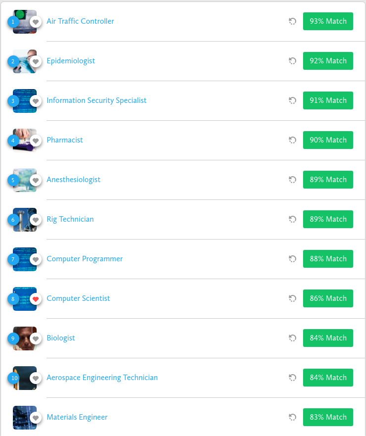

Currently, I am a Grade 12 student at Langley Secondary School.
I work at Code Ninjas, where I teach kids from 5-17 years of age how to
program.
I love to program, which is what I want to pursue after high school.
I enjoy my current job, and I find teaching people programming very fulfilling.
It keeps me learning more and more, specifically how to teach younger kids.
I have 2 younger brothers, aged 11 and 5.
Mateo Cabanal
To continue, scroll down
About me
All of the jobs I have had, required me to have good social skills, either when dealing with difficult
customers or when teaching kids how to program.
Now, with my latest job I need to keep growing my programming skills as some of the students at my work are
ahead of the other kids and need a harder challenge in the form of programming.
This requires me to learn more, to keep teaching the students more and more.
As a programmer, you never stop learning.
I also have experience pushing through high stress events. An example of this is when keeping my composure
in a close basketball game nearing the end.
Experience

I am still in high school, however I plan to go to university immediately after I graduate.
I plan to pursue a career in Software Engineering.
I am a self-tought programmer, knowing a range of languages like: C, C++, Rust, Javascript, Typescript and
Python.
Here are some examples of my work:
This site was coded by me, so this is also part of my examples of work.
The HTTP server, in charge of handling connections to and from this website is Tinyhttp
A project I am currently improving.
Education
I want to pursue Software Engineering and get a job at a company like Google, Facebook, Amazon or Apple.
I believe my current job is a step in the right direction, which will eventually lead to a job I will love.
Ambitions
I have a strong interest in computers, in all aspects.
I also play basketball competively.
Interests

I have considered a few, not all of them. The ones that I have considered are: Anesthesiologist, Aerospace Engineering Technician and Materials Engineer. Those three seem to be the best matches for me besides a job in software engineering. I want to make a change and help people, and wit these three careers, I would be able to do that while discovering new things and creating them too.
resume